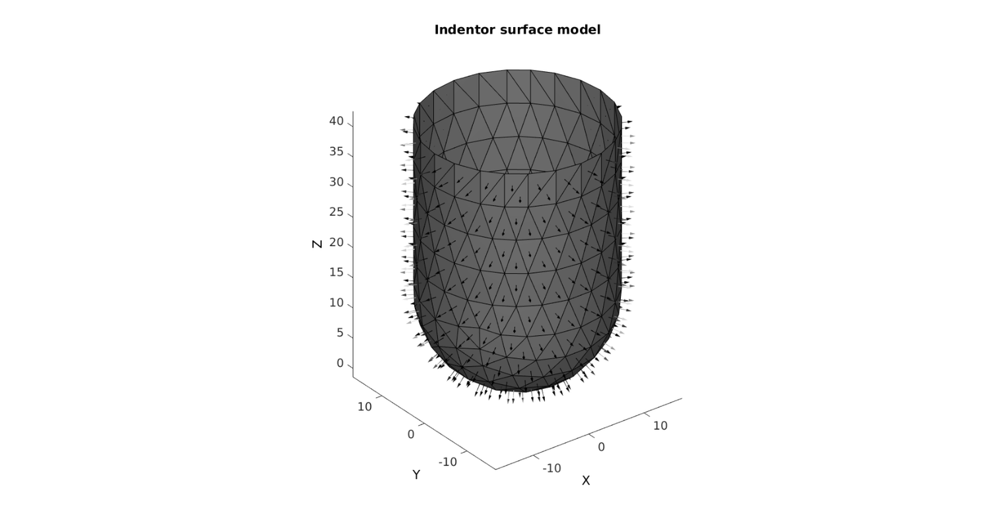
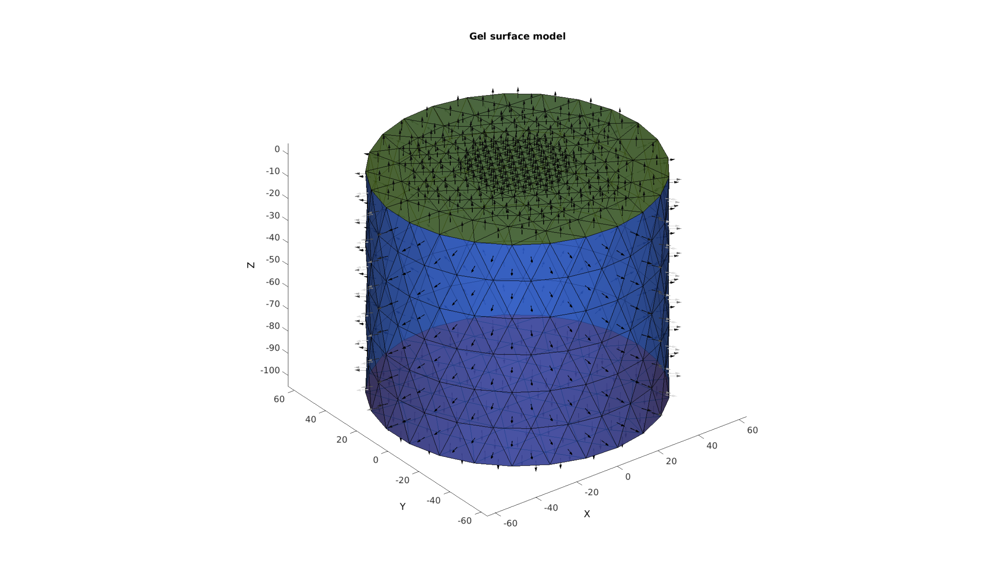
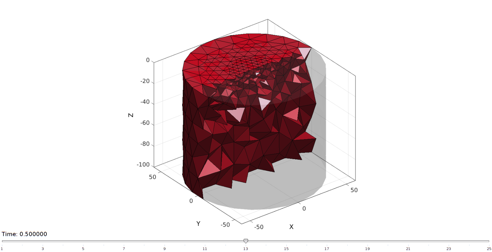
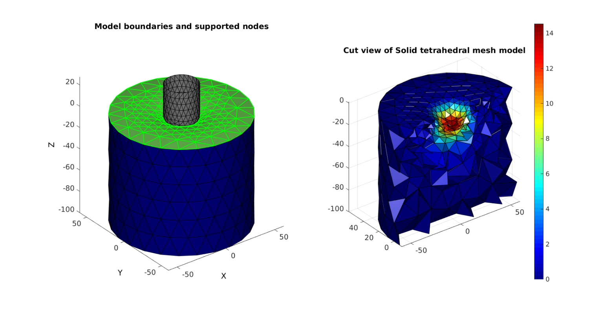
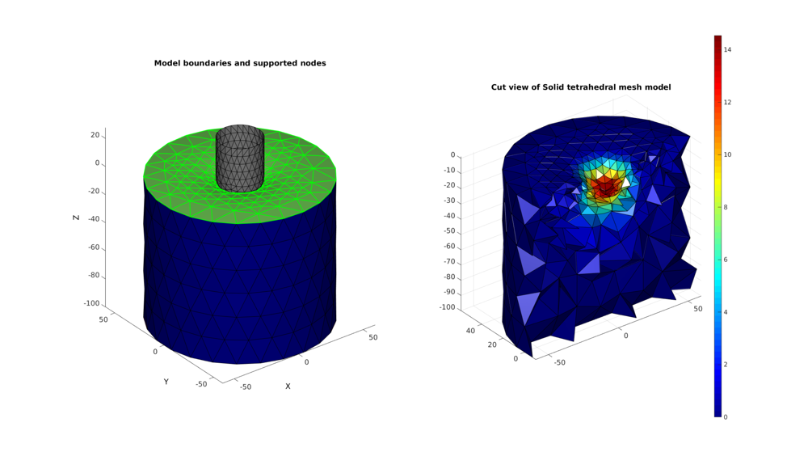

DEMO_FEBio_cylinder_spherical_head_indentor
Contents
- Build indentor sphere
- Build indentor shaft
- Compose indentor
- Build gel
- Refining top surface locally
- Create size field for spatially varying mesh density
- Mesh solid using tetgen
- Join node sets
- Define boundary condition node sets
- CONSTRUCTING FEB MODEL
- SAVING .FEB FILE
- RUNNING FEBIO JOB
- IMPORTING NODAL DISPLACEMENT RESULTS
- CREATING NODE SET IN DEFORMED STATE
clear; close all; clc;
Plot settings
fontSize=15;
faceAlpha=1;
lineWidth1=1.5;
lineWidth2=3;
markerSize1=15;
markerSize2=30;
edgeWidth=2;
edgeColor='k';
faceAlpha1=1;
path names
defaultFolder = fileparts(fileparts(mfilename('fullpath'))); savePath=fullfile(defaultFolder,'data','temp');
gelRadius=119/2; gelHeight=100; sphereRadius=30/2; % The radius of the hemi-spher portion nRefine=1; % Number of |subtri| refinements for icosahedron cylinderHeight=55/2; % height of the cylinder part pointSpacing=15; % Aproximate node spacing for cylinder portion distanceSplitSteps=[45 25]; minEdgeSizeFactor=0.2; maxEdgeSizeFactor=3; sizeFactor=3; initialSpacing=0.1; bcPrescribeMagnitudes=[0 0 -15-initialSpacing]; %NB desired and effect of initial spacing indentorShellThickness=0.01; contactType=1; %1=sticky, 2=facet to facet sliding, 3=sliding_with_gaps tetTypeOpt=2; %Element type switch tetTypeOpt case 1 tetType='tet4'; triSurfType='tri3'; %Control settings nSteps=10; max_refs=25; max_ups=0; contactPenalty=100; case 2 tetType='tet10'; triSurfType='tri6'; %Control settings nSteps=20; max_refs=25; max_ups=0; contactPenalty=50; end
Build indentor sphere
hemiStruct.sphereRadius=sphereRadius; %Sphere radius hemiStruct.nRefineRegions=nRefine; %Number of refinement steps for regions hemiStruct.nRefineMesh=1; %Number of refinement steps for mesh [F1,V1,~]=hemiSphereRegionMesh(hemiStruct); F1=fliplr(F1); %flip face orientation V1(:,3)=-V1(:,3); %Flip % Find hemi-sphere edge TR =triangulation(F1,V1); E = freeBoundary(TR); [indList]=edgeListToCurve(E);
Build indentor shaft
Vc=V1(indList(1:end-1),:); [D]=patchEdgeLengths(F1,V1); % Extruding model cPar.numSteps=round(cylinderHeight/mean(D(:))); cPar.depth=cylinderHeight; cPar.patchType='tri'; cPar.dir=1; cPar.closeLoopOpt=1; [F2,V2]=polyExtrude(Vc,cPar); F2=fliplr(F2);
Compose indentor
%Merge sets Vs=[V1;V2]; Fs=[F1;F2+size(V1,1);]; [~,ind1,ind2]=unique(pround(Vs,5),'rows'); Fs=ind2(Fs); ind=ind2(indList(1:end-1)); Vs=Vs(ind1,:); %Shift so sphere tip is at 0,0,0 Vs(:,3)=Vs(:,3)-min(Vs(:,3))+initialSpacing; %Smoothen transition region (only move shared nodes) L=true(size(Vs,1),1); L(ind)=0; cParSmooth.Method='HC'; cParSmooth.n=50; cParSmooth.RigidConstraints=find(L); [Vs]=tesSmooth(Fs,Vs,[],cParSmooth);
cFigure; title('Indentor surface model','FontSize',fontSize); xlabel('X','FontSize',fontSize); ylabel('Y','FontSize',fontSize); zlabel('Z','FontSize',fontSize) hold on; patch('Faces',Fs,'Vertices',Vs,'FaceColor',0.5*ones(1,3),'EdgeColor','k'); hp=patchNormPlot(Fs,Vs,2); %Show face normals % patch('Faces',F1,'Vertices',V1,'FaceColor','g','EdgeColor','k'); % patch('Faces',F2,'Vertices',V2,'FaceColor','r','EdgeColor','k'); % ind=[1:cPar.numSteps:100]; % plotV(Vs(L,:),'r.','MarkerSize',25); axis equal; view(3); axis tight; axis vis3d; grid off; set(gca,'FontSize',fontSize); camlight headlight; drawnow;
Build gel
%Sketching profile ns=150; t=linspace(0,2*pi,ns); t=t(1:end-1); x=gelRadius*cos(t); y=gelRadius*sin(t); z=zeros(size(x)); Vc=[x(:) y(:) z(:)]; np=ceil(max(pathLength(Vc))./pointSpacing); [Vc]=evenlySampleCurve(Vc,np,'pchip',1); % Extruding model cPar.numSteps=round(gelHeight/pointSpacing); cPar.depth=gelHeight; cPar.patchType='tri'; cPar.dir=-1; cPar.closeLoopOpt=1; [Fg,Vg]=polyExtrude(Vc,cPar); Fg=fliplr(Fg); Vgb=Vg(cPar.numSteps:cPar.numSteps:end,:); Vgt=Vg(1:cPar.numSteps:end,:); %Mesh top surface regionCell={Vgt(:,[1 2])}; [Ft,Vt]=regionTriMesh2D(regionCell,pointSpacing,0,0); Vt(:,3)=mean(Vgt(:,3)); %Mesh bottom surface regionCell={Vgb(:,[1 2])}; [Fb,Vb]=regionTriMesh2D(regionCell,pointSpacing,0,0); Fb=fliplr(Fb); %flip face orientation Vb(:,3)=mean(Vgb(:,3));
Refining top surface locally
if ~any(isnan(distanceSplitSteps)) for q=1:numel(distanceSplitSteps) D=sqrt(sum(Vt(:,1:2).^2,2)); [DF]=vertexToFaceMeasure(Ft,D); logicFaces=DF<distanceSplitSteps(q); indNodesFaces=Ft(logicFaces,:); indNodesFaces=unique(indNodesFaces(:))+size(Ft,1); [Ft,Vt,Ct,indIni]=subTriDual(Ft,Vt,logicFaces); %Smoothen newly introduced nodes cPar.Method='HC'; cPar.n=50; cPar.RigidConstraints=indIni; [Vt]=tesSmooth(Ft,Vt,[],cPar); %Smoothen boundary nodes on original mesh nodes TR=triangulation(Ft(Ct==1,:),Vt); E=freeBoundary(TR); indEdge=unique(E(:)); logicValid=ismember(indEdge,indNodesFaces); indEdge=indEdge(logicValid); logicEdge=false(size(Vt,1),1); logicEdge(indEdge)=1; indRigid=find(~logicEdge); cPar.Method='HC'; cPar.n=50; cPar.RigidConstraints=indRigid; [Vt]=tesSmooth(Ft,Vt,[],cPar); Vt(:,3)=mean(Vgt(:,3)); end end
Warning: Some input points are not referenced by the triangulation. Warning: Some input points are not referenced by the triangulation.
Merge gel model surface components
V_gel=[Vg; Vt; Vb; ]; F_gel=[Fg; Ft+size(Vg,1); Fb+size(Vg,1)+size(Vt,1); ]; C_gel=[ones(size(Fg,1),1); 2*ones(size(Ft,1),1); 3*ones(size(Fb,1),1); ]; [~,ind1,ind2]=unique(pround(V_gel,5),'rows'); F_gel=ind2(F_gel); V_gel=V_gel(ind1,:); cFigure; title('Gel surface model','FontSize',fontSize); xlabel('X','FontSize',fontSize); ylabel('Y','FontSize',fontSize); zlabel('Z','FontSize',fontSize) hold on; patch('Faces',F_gel,'Vertices',V_gel,'FaceColor','flat','CData',C_gel,'EdgeColor','k','FaceAlpha',0.75); hp=patchNormPlot(F_gel,V_gel,5); %Show face normals % patch('Faces',Ft,'Vertices',Vt,'FaceColor','b','EdgeColor','k'); % patch('Faces',Fb,'Vertices',Vb,'FaceColor','g','EdgeColor','k'); % patch('Faces',Fg,'Vertices',Vg,'FaceColor','r','EdgeColor','k'); % plotV(Vgb,'g.-','lineWidth',lineWidth1,'MarkerSize',markerSize1); % plotV(Vgt,'b.-','lineWidth',lineWidth1,'MarkerSize',markerSize1); colormap(gjet); axis equal; view(3); axis tight; axis vis3d; grid off; set(gca,'FontSize',fontSize); camlight headlight; drawnow;
Create size field for spatially varying mesh density
%Get edge lengths and base minimum size on input edge lengths [edgeLengths]=patchEdgeLengths(F_gel,V_gel); minEdgeSize=mean(edgeLengths)*minEdgeSizeFactor; %The smallest edge size maxEdgeSize=mean(edgeLengths)*maxEdgeSizeFactor; %The largest edge size D=minDist(V_gel,Vs); edgeSizeField=D.^2; edgeSizeField=edgeSizeField-min(edgeSizeField(:)); %Range from 0-.. edgeSizeField=edgeSizeField./max(edgeSizeField(:)); %Range from 0-1 edgeSizeField=(edgeSizeField*(maxEdgeSize-minEdgeSize))+minEdgeSize; %Range from minEdgeSize-maxEdgeSize
Mesh solid using tetgen
Create tetgen meshing input structure
modelName=fullfile(savePath,'tempModel1'); % Regional mesh volume parameter [regionA]=tetVolMeanEst(F_gel,V_gel); %Volume for a regular tet based on edge lengths inputStruct.stringOpt='-pq1.2AaY'; inputStruct.Faces=F_gel; inputStruct.Nodes=V_gel; inputStruct.holePoints=[]; inputStruct.faceBoundaryMarker=C_gel; %Face boundary markers inputStruct.regionPoints=[0 -50 -50]; %region interior point inputStruct.regionA=regionA*sizeFactor; %Desired volume for tets inputStruct.minRegionMarker=2; %Minimum region marker inputStruct.modelName=modelName; inputStruct.tetType=tetType; %Element type inputStruct.sizeData=edgeSizeField;
Mesh model using tetrahedral elements using tetGen (see: http://wias-berlin.de/software/tetgen/)
[meshOutput]=runTetGen(inputStruct); %Run tetGen
meshView(meshOutput);
%%%%%%%%%%%%%%%%%%%%%%%%%%%%%%%%%%%%%%%%%%%%% --- TETGEN Tetrahedral meshing --- 20-Dec-2017 11:20:43 %%%%%%%%%%%%%%%%%%%%%%%%%%%%%%%%%%%%%%%%%%%%% --- Writing SMESH file --- 20-Dec-2017 11:20:43 ----> Adding node field ----> Adding facet field ----> Adding holes specification ----> Adding region specification --- Done --- 20-Dec-2017 11:20:43 --- Writing MTR file --- 20-Dec-2017 11:20:43 --- Running TetGen to mesh initial Delaunay tesselation using sizing function--- 20-Dec-2017 11:20:43 Opening /mnt/data/MATLAB/GIT/GIBBON/lib_ext/tetGen/tempFiles/tempModel1.smesh. Opening /mnt/data/MATLAB/GIT/GIBBON/lib_ext/tetGen/tempFiles/tempModel1.mtr. Cannot access file /mnt/data/MATLAB/GIT/GIBBON/lib_ext/tetGen/tempFiles/tempModel1.b.node. Delaunizing vertices... Delaunay seconds: 0.01006 Creating surface mesh ... Surface mesh seconds: 0.001584 Recovering boundaries... Boundary recovery seconds: 0.001771 Removing exterior tetrahedra ... Spreading region attributes. Exterior tets removal seconds: 0.000595 Recovering Delaunayness... Delaunay recovery seconds: 0.000682 Refining mesh... Refinement seconds: 0.060557 Optimizing mesh... Optimization seconds: 0.005304 Writing /mnt/data/MATLAB/GIT/GIBBON/lib_ext/tetGen/tempFiles/tempModel1.1.node. Writing /mnt/data/MATLAB/GIT/GIBBON/lib_ext/tetGen/tempFiles/tempModel1.1.ele. Writing /mnt/data/MATLAB/GIT/GIBBON/lib_ext/tetGen/tempFiles/tempModel1.1.face. Writing /mnt/data/MATLAB/GIT/GIBBON/lib_ext/tetGen/tempFiles/tempModel1.1.edge. Writing /mnt/data/MATLAB/GIT/GIBBON/lib_ext/tetGen/tempFiles/tempModel1.1.mtr. Writing /mnt/data/MATLAB/GIT/GIBBON/lib_ext/tetGen/tempFiles/tempModel1.1.p2t. Output seconds: 0.018034 Total running seconds: 0.098684 Statistics: Input points: 398 Input facets: 792 Input segments: 1188 Input holes: 0 Input regions: 1 Mesh points: 1545 Mesh tetrahedra: 8394 Mesh faces: 17184 Mesh faces on exterior boundary: 792 Mesh faces on input facets: 792 Mesh edges on input segments: 1188 Steiner points inside domain: 1147 --- Done --- 20-Dec-2017 11:20:43 %%%%%%%%%%%%%%%%%%%%%%%%%%%%%%%%%%%%%%%%%%%%% --- Importing TetGen files --- 20-Dec-2017 11:20:43 --- Done --- 20-Dec-2017 11:20:43
Access model element and patch data
Fm=meshOutput.faces; Vm=meshOutput.nodes; Cm=meshOutput.faceMaterialID; Em=meshOutput.elements; elementMaterialID=meshOutput.elementMaterialID; Fb=meshOutput.facesBoundary; Cb=meshOutput.boundaryMarker;
Join node sets
V=[Vm;Vs]; Fs=[Fs+size(Vm,1)];
Define boundary condition node sets
logicFix= Cb==1 | Cb==3; %Side and bottom indBC_fix=Fb(logicFix,:); indBC_fix=unique(indBC_fix(:)); indIndentor=unique(Fs(:)); Fm_contact=Fb(Cb==2,:); %Top surface
Plot model and boundary condition nodes
%Selecting half of the model to see interior Y=Vm(:,2); YE=mean(Y(Em),2); L=YE>mean(Y); [Fc,Cc]=element2patch(Em(L,:),Cm(L),tetType); cFigure; subplot(1,2,1); patch('Faces',Fs,'Vertices',V,'FaceColor',0.5*ones(1,3),'EdgeColor','k'); title('Model boundaries and supported nodes','FontSize',fontSize); xlabel('X','FontSize',fontSize); ylabel('Y','FontSize',fontSize); zlabel('Z','FontSize',fontSize) hold on; patch('Faces',Fb,'Vertices',V,'FaceColor','flat','CData',Cb,'EdgeColor','k'); % plotV(V(Fb(:),:),'k.','lineWidth',lineWidth1,'MarkerSize',markerSize1); patch('Faces',Fm_contact,'Vertices',V,'FaceColor','none','edgeColor','g','lineWidth',lineWidth1); plotV(V(indBC_fix,:),'r.','lineWidth',lineWidth1,'MarkerSize',markerSize1); plotV(V(indIndentor,:),'k.','lineWidth',lineWidth1,'MarkerSize',markerSize1); axis equal; view(3); axis tight; axis vis3d; grid off; set(gca,'FontSize',fontSize); camlight headlight; subplot(1,2,2); title('Cut view of Solid tetrahedral mesh model','FontSize',fontSize); xlabel('X','FontSize',fontSize); ylabel('Y','FontSize',fontSize); zlabel('Z','FontSize',fontSize); hold on; patch('Faces',Fc,'Vertices',V,'FaceColor','flat','CData',Cc,'edgeColor',edgeColor); view(3); axis tight; axis equal; grid on; colormap(gjet); camlight headlight; set(gca,'FontSize',fontSize); drawnow;
CONSTRUCTING FEB MODEL
FEB_struct.febio_spec.version='2.0'; FEB_struct.Module.Type='solid'; % Defining file names FEB_struct.run_filename=[modelName,'.feb']; %FEB file name FEB_struct.run_logname=[modelName,'.txt']; %FEBio log file name %Creating FEB_struct FEB_struct.Geometry.Nodes=V; FEB_struct.Geometry.Elements={Em Fs}; %The element sets FEB_struct.Geometry.ElementType={tetType,'tri3'}; %The element types FEB_struct.Geometry.ElementMat={1*ones(1,size(Em,1));2*ones(1,size(Fs,1));}; FEB_struct.Geometry.ElementData.Thickness=[indentorShellThickness*ones(size(Fs,1),1)]; FEB_struct.Geometry.ElementData.IndicesForThickness=( (size(Em,1)+1):1:(size(Em,1)+size(Fs,1)) ); FEB_struct.Geometry.ElementsPartName={'Gel','Indentor'}; % DEFINING MATERIALS %Material 1: Gel c1=1e-3; k=c1*50; FEB_struct.Materials{1}.Type='Ogden'; FEB_struct.Materials{1}.Name='gel_mat'; FEB_struct.Materials{1}.Properties={'c1','m1','k'}; FEB_struct.Materials{1}.Values={c1,2,k}; %Material 2: Indentor FEB_struct.Materials{2}.Type='rigid body'; FEB_struct.Materials{2}.Properties={'density','center_of_mass'}; FEB_struct.Materials{2}.Values={1,[0,0,0]}; %Control section FEB_struct.Control.AnalysisType='static'; FEB_struct.Control.Properties={'time_steps','step_size',... 'max_refs','max_ups',... 'dtol','etol','rtol','lstol'}; FEB_struct.Control.Values={nSteps,1/nSteps,... max_refs,max_ups,... 0.001,0.01,0,0.9}; FEB_struct.Control.TimeStepperProperties={'dtmin','dtmax','max_retries','opt_iter'}; FEB_struct.Control.TimeStepperValues={(1/nSteps)/100,1/nSteps,5,5}; %Defining node sets FEB_struct.Geometry.NodeSet{1}.Set=indBC_fix; FEB_struct.Geometry.NodeSet{1}.Name='indBC_fix'; % FEB_struct.Geometry.NodeSet{2}.Set=indIndentor; % FEB_struct.Geometry.NodeSet{2}.Name='indIndentor'; %Defining surfaces FEB_struct.Geometry.Surface{1}.Set=Fs; FEB_struct.Geometry.Surface{1}.Type='tri3'; FEB_struct.Geometry.Surface{1}.Name='Contact_master_indentor'; FEB_struct.Geometry.Surface{2}.Set=Fm_contact; FEB_struct.Geometry.Surface{2}.Type=triSurfType; FEB_struct.Geometry.Surface{2}.Name='Contact_slave_gel'; %Adding contact information FEB_struct.Contact{1}.Surface{1}.SetName=FEB_struct.Geometry.Surface{1}.Name; FEB_struct.Contact{1}.Surface{1}.Type='master'; FEB_struct.Contact{1}.Surface{2}.SetName=FEB_struct.Geometry.Surface{2}.Name; FEB_struct.Contact{1}.Surface{2}.Type='slave'; switch contactType case 1 %STICKY FEB_struct.Contact{1}.Type='sticky'; FEB_struct.Contact{1}.Properties={'laugon','tolerance','penalty','minaug','maxaug','search_tolerance','max_traction','snap_tol'}; FEB_struct.Contact{1}.Values={0,0.1,contactPenalty,0,10,0.01,0,0.01}; case 2 %SLIDING facet-facet FEB_struct.Contact{1}.Type='facet-to-facet sliding'; FEB_struct.Contact{1}.Properties={'penalty','auto_penalty','two_pass',... 'laugon','tolerance',... 'gaptol','minaug','maxaug',... 'seg_up',... 'search_tol'}; FEB_struct.Contact{1}.Values={contactPenalty,1,0,... 0,0.1,... 0,0,10,... 0,... 0.01}; case 3 %SLIDING sliding_with_gaps FEB_struct.Contact{1}.Type='sliding_with_gaps'; FEB_struct.Contact{1}.Properties={'penalty','auto_penalty','two_pass',... 'laugon','tolerance',... 'gaptol','minaug','maxaug',... 'fric_coeff','fric_penalty',... 'seg_up',... 'search_tol'}; FEB_struct.Contact{1}.Values={contactPenalty,1,0,... 0,0.1,... 0,0,10,... 0,1,... 0,... 0.01}; end %Adding BC information FEB_struct.Boundary.Fix{1}.bc='x'; FEB_struct.Boundary.Fix{1}.SetName=FEB_struct.Geometry.NodeSet{1}.Name; FEB_struct.Boundary.Fix{2}.bc='y'; FEB_struct.Boundary.Fix{2}.SetName=FEB_struct.Geometry.NodeSet{1}.Name; FEB_struct.Boundary.Fix{3}.bc='z'; FEB_struct.Boundary.Fix{3}.SetName=FEB_struct.Geometry.NodeSet{1}.Name; %Constraint section FEB_struct.Constraints{1}.RigidId=2; FEB_struct.Constraints{1}.Prescribe{1}.bc='x'; FEB_struct.Constraints{1}.Prescribe{1}.Scale=bcPrescribeMagnitudes(1); FEB_struct.Constraints{1}.Prescribe{1}.lc=1; FEB_struct.Constraints{1}.Prescribe{2}.bc='y'; FEB_struct.Constraints{1}.Prescribe{2}.Scale=bcPrescribeMagnitudes(2); FEB_struct.Constraints{1}.Prescribe{2}.lc=1; FEB_struct.Constraints{1}.Prescribe{3}.bc='z'; FEB_struct.Constraints{1}.Prescribe{3}.Scale=bcPrescribeMagnitudes(3); FEB_struct.Constraints{1}.Prescribe{3}.lc=1; FEB_struct.Constraints{1}.Fix{1}.bc='Rx'; FEB_struct.Constraints{1}.Fix{2}.bc='Ry'; FEB_struct.Constraints{1}.Fix{3}.bc='Rz'; %Load curves FEB_struct.LoadData.LoadCurves.id=1; FEB_struct.LoadData.LoadCurves.type={'linear'}; FEB_struct.LoadData.LoadCurves.loadPoints={[0 0;1 1;]}; %Adding output requests FEB_struct.Output.VarTypes={'displacement','stress','relative volume'}; %Specify log file output run_node_output_name=[FEB_struct.run_filename(1:end-4),'_node_out.txt']; FEB_struct.run_output_names={run_node_output_name}; FEB_struct.output_types={'node_data'}; FEB_struct.data_types={'ux;uy;uz'};
SAVING .FEB FILE
FEB_struct.disp_opt=0; %Display waitbars option
febStruct2febFile(FEB_struct);
%%%%%%%%%%%%%%%%%%%%%%%%%%%%%%%%%%%%%%%%%%%%% --- Writing FEBio XML object --- 20-Dec-2017 11:20:45 Adding Module level Adding Control level Adding Globals level Adding Material level Adding Geometry level ----> Adding node field ----> Adding element field ----> Adding tet10 element entries.... ----> Adding tri3 element entries.... ----> Adding element data field ----> Thickness data entries found ----> Adding surface field ----> Adding NodeSet field Adding Boundary level ----> Defining fix type boundary conditions Adding Contact field ----> Defining contact ----> Setting contact parameters ----> Defining contact surface pair Adding Constraints level Adding LoadData level ----> Defining load curves Adding Output level ----> Adding plotfile field ----> Adding logfile field Warning: Provided path of logfile is replaced by .feb file path. Only provide filename to avoid this warning Writing .feb file --- Done --- 20-Dec-2017 11:20:48
RUNNING FEBIO JOB
% FEBioRunStruct.FEBioPath='C:\Program Files\febio2-2.2.6\bin\febio2.exe'; FEBioRunStruct.run_filename=FEB_struct.run_filename; FEBioRunStruct.run_logname=FEB_struct.run_logname; FEBioRunStruct.disp_on=1; FEBioRunStruct.disp_log_on=1; FEBioRunStruct.runMode='external';%'internal'; FEBioRunStruct.t_check=0.25; %Time for checking log file (dont set too small) FEBioRunStruct.maxtpi=1e99; %Max analysis time FEBioRunStruct.maxLogCheckTime=3; %Max log file checking time [runFlag]=runMonitorFEBio(FEBioRunStruct);%START FEBio NOW!!!!!!!!
%%%%%%%%%%%%%%%%%%%%%%%%%%%%%%%%%%%%%%%%%%%%% --- STARTING FEBIO JOB --- 20-Dec-2017 11:20:48 Waiting for log file... Proceeding to check log file...20-Dec-2017 11:20:48 ------- converged at time : 0.05 ------- converged at time : 0.1 ------- converged at time : 0.15 ------- converged at time : 0.2 ------- converged at time : 0.25 ------- converged at time : 0.3 ------- converged at time : 0.35 ------- converged at time : 0.4 ------- converged at time : 0.45 ------- converged at time : 0.5 ------- converged at time : 0.55 ------- converged at time : 0.6 ------- converged at time : 0.65 ------- converged at time : 0.7 ------- converged at time : 0.75 ------- converged at time : 0.8 ------- converged at time : 0.85 ------- converged at time : 0.9 ------- converged at time : 0.95 ------- converged at time : 1 --- Done --- 20-Dec-2017 11:22:43
IMPORTING NODAL DISPLACEMENT RESULTS
Importing nodal displacements from a log file
[~, N_disp_mat,~]=importFEBio_logfile(FEB_struct.run_output_names{1}); %Nodal displacements
DN=N_disp_mat(:,2:end,end); %Final nodal displacements
CREATING NODE SET IN DEFORMED STATE
V_def=V+DN; DN_magnitude=sqrt(sum(DN.^2,2));
Plotting the deformed model
[CF]=vertexToFaceMeasure(Fc,DN_magnitude); cFigure; subplot(1,2,1); patch('Faces',Fs,'Vertices',V_def,'FaceColor',0.5*ones(1,3),'EdgeColor','k'); title('Model boundaries and supported nodes','FontSize',fontSize); xlabel('X','FontSize',fontSize); ylabel('Y','FontSize',fontSize); zlabel('Z','FontSize',fontSize) hold on; patch('Faces',Fb,'Vertices',V_def,'FaceColor','flat','CData',Cb,'EdgeColor','k'); % plotV(V(Fb(:),:),'k.','lineWidth',lineWidth1,'MarkerSize',markerSize1); patch('Faces',Fm_contact,'Vertices',V_def,'FaceColor','none','edgeColor','g','lineWidth',lineWidth1); axis equal; view(3); axis tight; axis vis3d; grid off; set(gca,'FontSize',fontSize); camlight headlight; subplot(1,2,2); title('Cut view of Solid tetrahedral mesh model','FontSize',fontSize); hps=patch('Faces',Fc,'Vertices',V_def,'FaceColor','flat','CData',CF,'edgeColor',edgeColor,'FaceAlpha',faceAlpha1); view(3); axis tight; axis equal; grid on; colormap jet; colorbar; camlight headlight; set(gca,'FontSize',fontSize); drawnow;

GIBBON www.gibboncode.org
Kevin Mattheus Moerman, gibbon.toolbox@gmail.com
GIBBON footer text
License: https://github.com/gibbonCode/GIBBON/blob/master/LICENSE
GIBBON: The Geometry and Image-based Bioengineering add-On. A toolbox for image segmentation, image-based modeling, meshing, and finite element analysis.
Copyright (C) 2017 Kevin Mattheus Moerman
This program is free software: you can redistribute it and/or modify it under the terms of the GNU General Public License as published by the Free Software Foundation, either version 3 of the License, or (at your option) any later version.
This program is distributed in the hope that it will be useful, but WITHOUT ANY WARRANTY; without even the implied warranty of MERCHANTABILITY or FITNESS FOR A PARTICULAR PURPOSE. See the GNU General Public License for more details.
You should have received a copy of the GNU General Public License along with this program. If not, see http://www.gnu.org/licenses/.